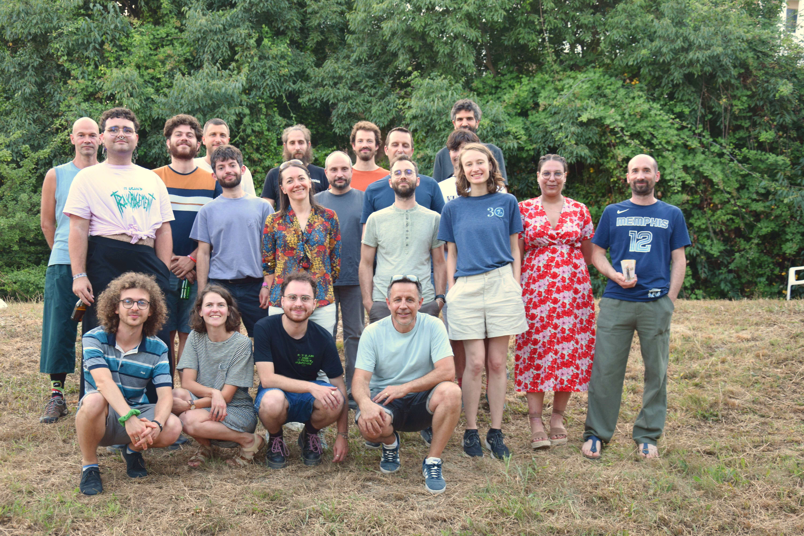
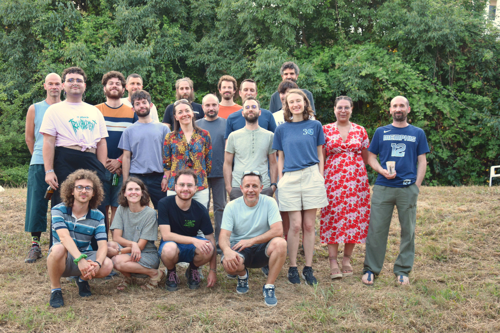

 Katharina Boudgoust's Homepage
Since February 2024, I am a CNRS researcher (Chargée de Recherche) and part of the ECO Team of the LIRMM research institute in Montpellier in France.
Prior to this, I was from 2022 to 2023 postdoc in the Cryptography and Security Team of the Aarhus University in Denmark, hosted by Peter Scholl.
From 2018 to 2021, I was a PhD student within the EMSEC team at the IRISA Laboratory in Rennes under the supervision of Adeline Roux-Langlois and Pierre-Alain Fouque.
News
- 29.01.2026: I am part of the Amber team, which plans to submit a Threshold KEM based on lattices to the NIST Multi-Party Threshold Cryptography call. [Here] our preview write-up
- 12.01.2026: As part of the DIALS project, I am visiting in January/February several research institutes in Senegal!
- 05.06.2025: A lot of things going on: ECO is having a Lattice Club and hosting the Decrypting Diversity Summit 2025
- 31.01.2025: The ECO group is expanding, co-supervising my very first PhD student and first two postdocs!
- 21.05.2024: My personal conference season starts: Eurocrypt'24 in Zürich where I give a talk at FHE:IDEAs and PQCrypto'24 in Oxford where I give a talk at newtpqc
Contact
Katharina BoudgoustLIRMM, Bâtiment 4
161 Rue Ada
34095 Montpellier
France
Affiliation: CNRS, Univ Montpellier, LIRMM, France
E-Mail: katharina.boudgoust [at] lirmm.fr
Program Committees
2026: Eurocrypt'26, Jury Prix de Thèse Gilles-Kahn
2025: Eurocrypt'25, Journées Codage et Cryptographie 2025, APKC'25, Latincrypt'25, Jury Prix de Thèse Gilles-Kahn
2024: CCS'24 [Top Reviewer Award], PQCrypto'24, CFAIL'24
2023: PKC'23, CFAIL'23, Asiacrypt'23, WAHC'23
My Personal Review Overview
Co-Organization of Events
Ongoing Organizations
Member of the Collegial Council of the WinC Association (since 2025)
WinC Coffee Breaks (since 2023)
WinC Seminars (since 2023)
Past Organizations
Decrypting Diversity Summit 2025
CROSSFYRE'23
Projects
Ongoing Projects
ANR PRCE RELATE (Resilient Lattice Cryptography via Thresholdizing, Masking and Zero-Knowledge Proofs) (2026-2029)
CNRS-Afrique DIALS (Design and Implementation of Advanced Lattice-based Signature schemes) (2025-2026)
ANR ASTRID AMIRAL (AMélioration des sIgnatures reposant sur les Réseaux et Applications aux fonctionnaLités cryptographiques avancées) (2022-2026)
PEPR SecureCompute (2022-2027)
Past Projects
Protocol Labs Research Grant Program RFP-013 (2022-2023)
Media
Short Interview 16.05.2024 for CNRS Informatics (French)